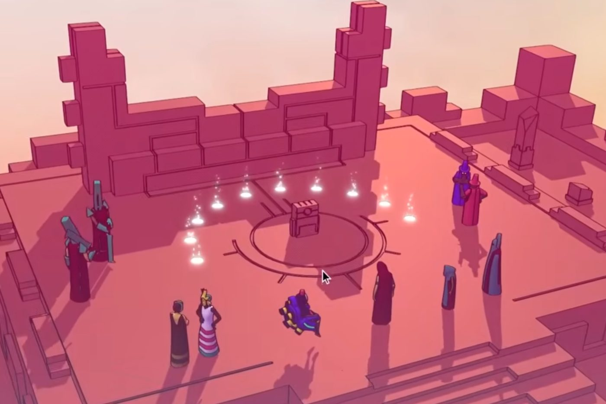
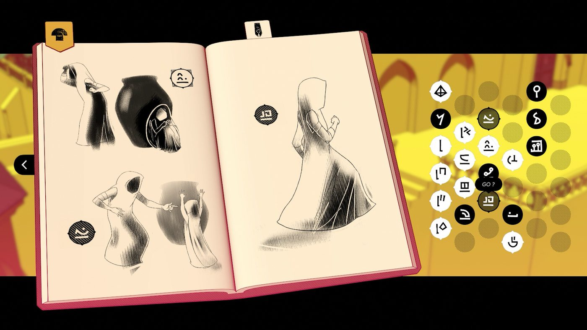
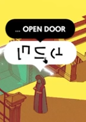
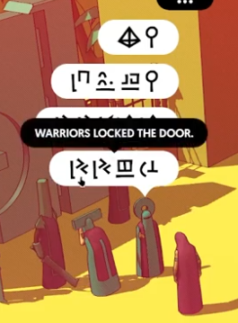
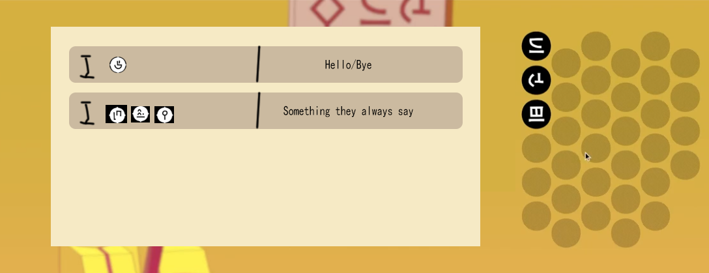
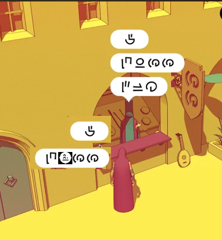
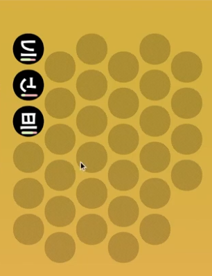

设计分析 · 个人课程作业
玩家不只是语言的旁听者和观察者，也是说话的人。
《巴别塔圣歌》（Chants of Sennaar）是一款以破译虚构文字为核心的解谜冒险游戏：探索、观察、聆听，破译 5 种独特的虚构文字，让巴别塔里被分隔的各个民族重新团结。
玩家穿过巴别塔，观察、聆听并学习塔中各个民族的语言，寻找向上的道路。最终，玩家掌握所有语言，弥合各个文明之间的隔阂，重建不同文化之间的信任，让巴别塔重新成为一个整体。

游戏的核心机制是一套语言猜测与验证系统。玩家在语境丰富的环境中阅读，对词义和句子结构形成假设；通过在不同对话中交叉比对同一个符号，逐步确认自己的解读，直到每个字符、每句话的含义都变得清楚。
为了支撑这个过程，游戏为玩家提供了专门的笔记本系统。



玩家不只是语言的旁听者和观察者，也是说话的人。
在重设计的系统里，玩家不只观察和聆听语言，也主动使用语言。玩家可以和 NPC 直接交流：回应问候、尝试回答问题、提出自己的问题，在使用中建立对词语和句子结构的理解。
笔记本不再只能记录单个符号的猜测。玩家也可以记录自定义的短语和句式，例如常见的问候语、对话里反复出现的「我在找向上的路」，或者用来提问的句子结构。每条记录旁边可以写下当前的理解，并随着理解加深而更新。


原作里，NPC 基本上只是对着玩家说话，并不期待回应；重设计后，玩家可以主动回复。
有了基于对话的验证系统，原来的笔记本验证机制就不再必要，但翻译系统本身仍然有价值，可以保留。为了鼓励玩家更积极地对话，每个符号都有自己的破译进度：玩家在对话中成功使用一个符号达到一定次数后，这个符号就被正式记录为已破译。

| 原作 | 重设计 | |
|---|---|---|
| 推进方式 | 观察、寻找、破译，通过阅读环境推进 | 对话驱动推进，NPC 等玩家先开口 |
| 玩家角色 | 沉默的破译者：玩家解读语言，但没有人对玩家说话 | 主动的参与者：发起对话、赢得信任、了解别人如何看待自己 |
| 主题感受 | 孤独。玩家目睹连接，却不是其中的一部分 | 参与。连接是亲身完成的，而不是旁观的 |
这个改变让社交互动成为主要的玩法，因此需要更大范围地调整整体设计。原作里，玩家主要通过阅读环境信息、找到道具、用道具解锁更多线索来推进；重设计后，推进的主要动力是对话。有些信息不再直接写出来，而是藏在对话里；NPC 会等玩家先开口；关键 NPC 不会直接放玩家进入下一个区域，玩家必须恰当地和他们交流，他们才会带路。
这个改变也带来了不同的主题分量。原作有一种孤独感：玩家读遍世界里的每一段文字，替各个民族破译语言，却从来没有真正觉得自己是他们中的一员。几乎没有人把玩家当作一个人来说话。玩家是一个局外人，被一个关于连接的故事打动，自己却不在这个故事里。
重设计的系统更直接地表达了「人与人的连接」这个主题。玩家角色以陌生人的身份进入这个世界，逐渐赢得信任，和每个人交谈，得到回应，并了解别人如何看待自己。连接不再是玩家观察的东西，而是玩家参与其中的东西。
反过来看，原作的设计者为什么选择了现在的系统？
验证系统给了玩家一条退路：即使对某个符号不完全确定，也可以先猜，游戏会告诉玩家对不对。它是一张安全网，也让游戏保持推进。猜错不会演变成对整个故事的错误理解；如果玩家完全卡住，也总能在验证页上把所有选项试一遍。这样做足够乏味，没人想这么做，但这条路是存在的。
基于对话的系统意味着每个 NPC 都需要有话问玩家，并且要为玩家可能说出的每一句话准备好回应，这是很大的工作量。原系统绕开了这一切：验证在一个独立的界面里进行，NPC 只需要提供线索，不需要和玩家交谈。这是一个务实的选择。
游戏的核心是让玩家感受到塔中各个民族之间的隔阂，而这种感受本来就应该让人不舒服。为什么他们不学习彼此的语言？为什么他们这么冷漠、这么封闭？因为他们已经不再试着理解彼此，每个群体都只顾推进自己的目标。玩家角色的存在是为了重新连接他们，却走在一个早已放弃连接的世界里。这种孤立不是设计缺陷，而正是游戏想要创造的体验。
游戏截图来自《巴别塔圣歌》，仅用于设计分析。